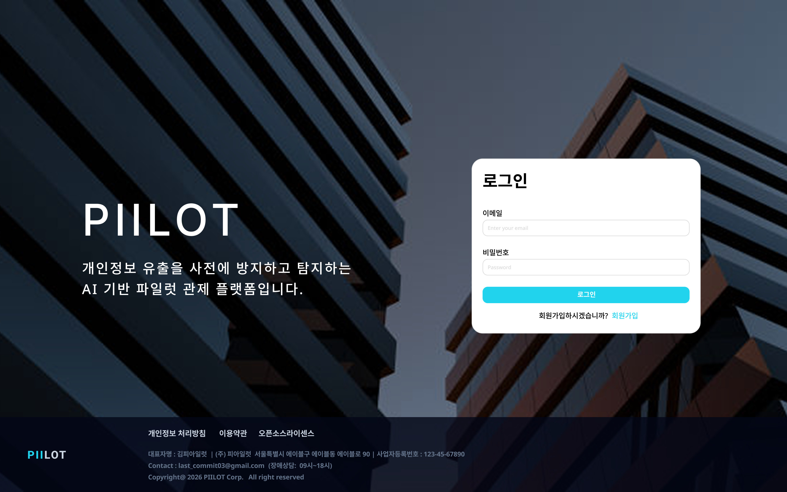
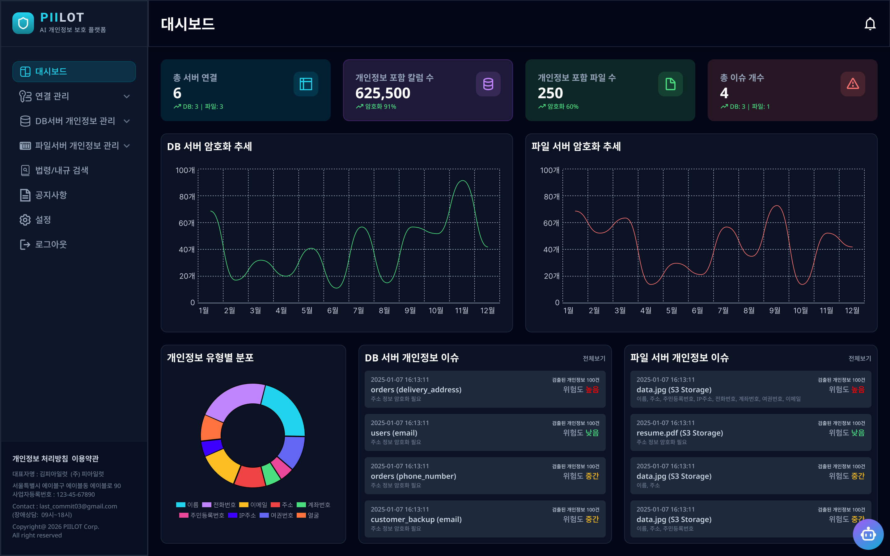
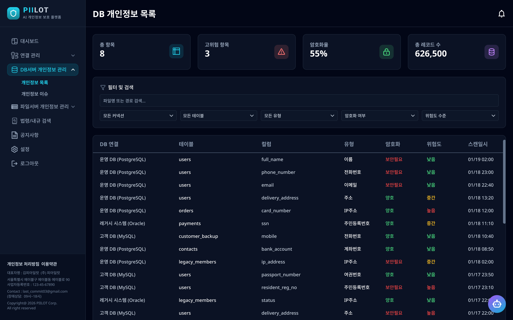
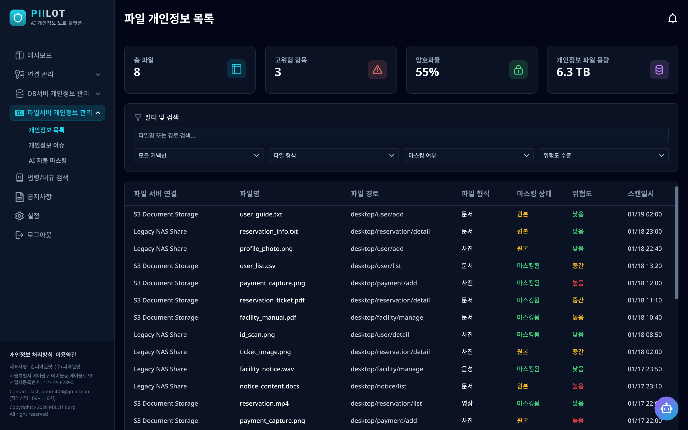
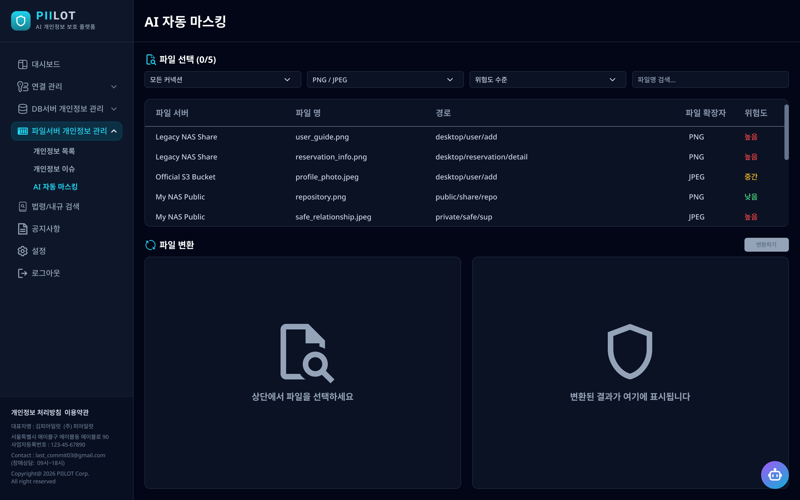
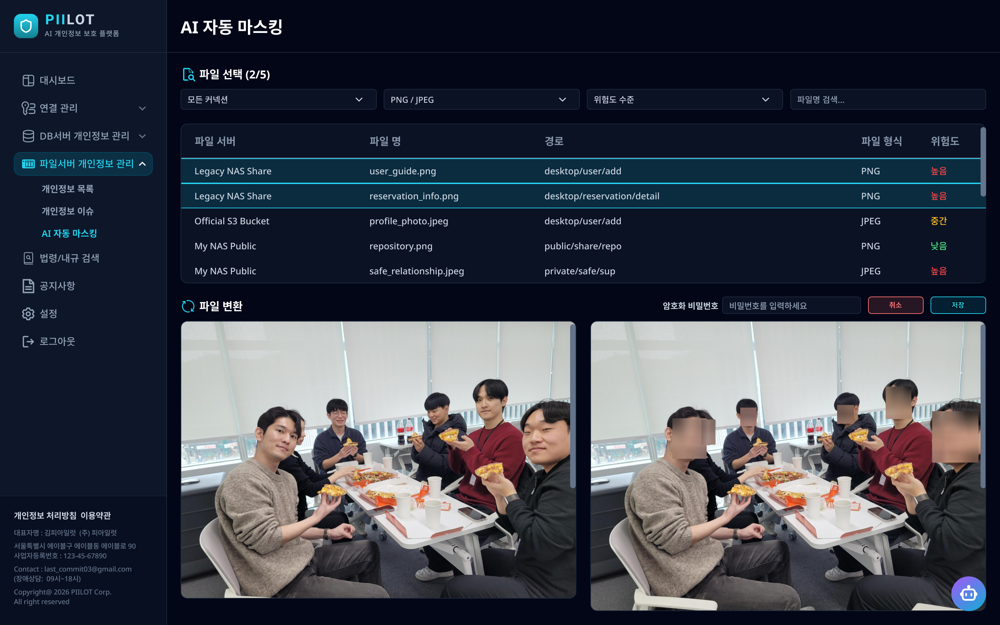

PIILOT - AI 기반 개인정보 보호 플랫폼
기업 인프라에 산재된 개인정보를 AI 모델로 자동 탐지하고 비식별화하여 보안 및 법적 리스크를 최소화하는 통합 관제 플랫폼.
Overview
기업 환경의 DB·파일 서버에 분산된 개인식별정보(PII)를 AI 모델이 자동으로 탐지·비식별화하는 통합 관제 플랫폼이다. 개인정보 유출을 사전에 방지하고 탐지하는 것을 목적으로, 문서·이미지 하이브리드 비식별화 파이프라인과 2단계 XGBoost 분류 아키텍처를 핵심 AI 엔진으로 구성하였다.
총 54일간(2025.12.29 - 2026.02.20) 진행된 KT AIVLE School 8기 Bigproject로, AI 6명, BE 4명, FE 2명, Infra 2명으로 구성된 14인 팀이 개발하였다. 최종 발표에서 AI 트랙 대상(1위)을 수상하였다.

Key Features
대시보드에서 연결된 서버 수, 개인정보 포함 컬럼/파일 수, 총 이슈 개수를 한눈에 파악할 수 있으며, DB·파일 서버별 암호화 추세와 개인정보 유형 분포를 실시간 차트로 제공한다.

DB 서버와 파일 서버를 연결하여 개인정보가 포함된 컬럼·파일을 탐지하고, 암호화 여부·위험도·스캔 이력을 관리한다.


AI 자동 마스킹 (Auto Masking)
이미지·문서 파일 내의 개인정보를 AI 모델이 자동으로 감지하여 마스킹 처리한다. 얼굴·개인식별 정보가 담긴 이미지를 선택하면 변환 결과를 실시간으로 미리볼 수 있으며, 비식별화 전·후를 나란히 비교할 수 있다.


Approach
AI - PII 합성 데이터셋 설계 및 동적 생성
- AI 학습용 PII 합성 데이터셋 설계 및 동적 생성 (8,500개)
- 특정 PII 쏠림 현상 방지 - 동적 가중치 알고리즘으로 8개 클래스 균형 확보
AI - 문서/이미지 하이브리드 비식별화 파이프라인
- 문서·이미지 형식을 모두 처리하는 하이브리드 비식별화 파이프라인 설계
AI - DB 레코드 암호화 여부 판별 모델 (2단계 XGBoost)
- 1차 분류(이진): 계좌번호 여부를 우선 판별하여 혼동 클래스 분리
- 2차 분류(다중): 7종 PII 또는 NONE으로 세분화하여 최종 암호화 여부 판별
- 50여 개의 은행 코드 패턴, 유효 계좌 길이 등 금융·보안 도메인 지식 반영
- 최종 정확도 94.4% 달성 (84 / 89)
BE - 백엔드 API 구현
- 파일 개인정보 목록 API 구현
- 개인 알림 시스템 API 구현
- QueryDSL 도입으로 복잡한 조건 필터링·통계 효율화
- COUNT 쿼리 병목을 Slice 기반 페이징으로 전환하여 DB I/O 성능 개선
BE: 파일 개인정보 목록 API 구현, 개인 알림 시스템 API 구현
Tech Stack
Results
- DB 레코드 암호화 여부 판별 모델 최종 정확도 94.4% 달성
- 개인정보 비식별화는 미탐(FN)이 법적 리스크로 직결되는 점을 고려, Recall 극대화를 목표로 F2 Score를 기준 지표로 채택
- 데이터 불균형 해결 - LLM 합성 데이터 생성 시 특정 PII 쏠림 발생을 동적 가중치 알고리즘으로 8개 클래스 균형 확보
- KT AIVLE School 8기 AI 트랙 Bigproject 대상(1위) 수상